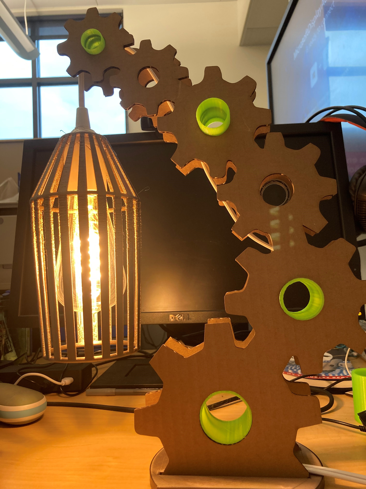

The Final Project
Converting Learnings to Middle School Projects
For my final project I choose to adjust our learnings into projects that could be done at the middle school level. I wanted to find a modeling program that would work with kids and create a few projects using the skills learned in this class. I decided that I would create a kids version of the casting and molding project and that I would do some mesh editing to create a project where students created add-ons to a robot they would be able to program. I made so me adjustments after feedback to the original project proposal after feedback to simplify the project. The full proposal with updates can be found in the previous assignment.
Finading a modeling program for kids and the ice/candle
Interation Lamp
The first part of this project entailed finding a kid friendly CAD or modeling program. I thought TynkerCad which I have created a model with would work, but I found that the meshes it exports are have a lot of issues. This fueld my search to find an easy to use modeling program. I ended up decideding on 3D Builder which seemed to be most consistant in exporting out printable meshes. Below you can see the modeling programs I looked at.
Modeling Programs I tried creating molds and exporting moldes with.
Making my mold with 3D builder
Lamp rhino iteration 11
Brain Hurts
This project is proving to be a true challenge for me. It really hightlights my inexperience in Rhino as I struggle to get, what feel like basic
components doing what I want. I decided that I wanted to make a candle mold that would make candles for my fire place candlabra. I wanted to add some mountains to it for a personal touch.
However, after measuring my size needs and getting in the base cylider that getting the mountains to extrude on the candle would be challeninging. I started in Illustrator to get my moutain vector. I tried follwoing along with the riboon video
but was not doing things quite right. I experimented with a number of things for a few hours and tried googling to kow avail. I didn't know what words to search. Thankfully we have the best
TA who aggreed to schedule a time to work on it with me.
I got a lot of help from Junchau both in getting the curve working and the wrapping my brain around how to make a mold, for a mold. He gave me a bunch of tips and ways to move things around
which has been so helpful!I lost a my main candle mold, but thankfully we were able to make the the negatives I had created to make a mold. I first had created what my silicon mold should look like, instead of the mold to make it. I am going to print
each mold half of a difreant printer to get it done on time. My school has a rule where we can't leave the printer running if no one is in the building.
When I started my print I got a horrible sound from my printer as it tried to hone. I figured out that my Prusa gets unhappy about honeing if it is left at its highest postiion. I
could adjust the y and it was good to go.
Rhino File

A tale of two cities..I mean molds
Well I printed my molds at school, but quickly realized one my molds in is the negative, not the positive of what I wanted :( . Brain hurt!!! I can't fix it at work, but will work to fix it tomomrow after work. I believe I understand what I need
to do to fix it, which is exciting. It means I am learning!!!
Lamp rhino iteration 11
Brain Hurts
This project is proving to be a true challenge for me. It really hightlights my inexperience in Rhino as I struggle to get, what feel like basic components doing what I want. I decided that I wanted to make a candle mold that would make candles for my fire place candlabra. I wanted to add some mountains to it for a personal touch. However, after measuring my size needs and getting in the base cylider that getting the mountains to extrude on the candle would be challeninging. I started in Illustrator to get my moutain vector. I tried follwoing along with the riboon video but was not doing things quite right. I experimented with a number of things for a few hours and tried googling to kow avail. I didn't know what words to search. Thankfully we have the best TA who aggreed to schedule a time to work on it with me.
I got a lot of help from Junchau both in getting the curve working and the wrapping my brain around how to make a mold, for a mold. He gave me a bunch of tips and ways to move things around which has been so helpful!I lost a my main candle mold, but thankfully we were able to make the the negatives I had created to make a mold. I first had created what my silicon mold should look like, instead of the mold to make it. I am going to print each mold half of a difreant printer to get it done on time. My school has a rule where we can't leave the printer running if no one is in the building.
When I started my print I got a horrible sound from my printer as it tried to hone. I figured out that my Prusa gets unhappy about honeing if it is left at its highest postiion. I could adjust the y and it was good to go.